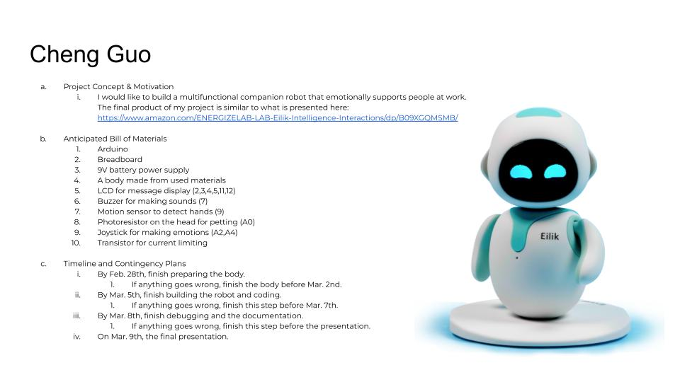

I would like to build a multifunctional companion robot that emotionally supports people at work. The final product of my project is similar to what is presented here: https://www.amazon.com/ENERGIZELAB-LAB-Eilik-Intelligence-Interactions/dp/B09XGQMSMB/